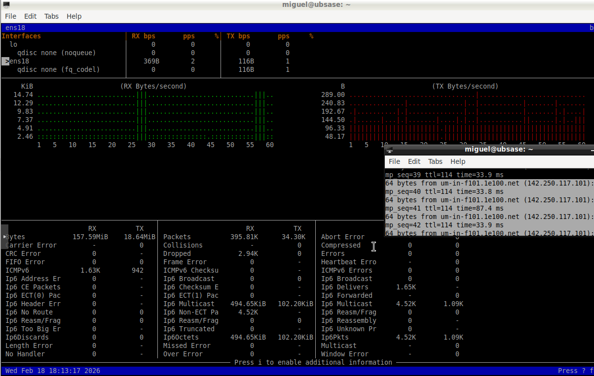
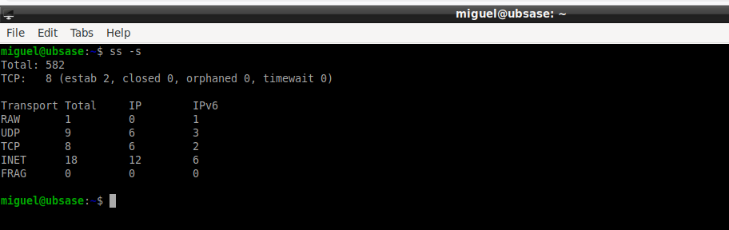
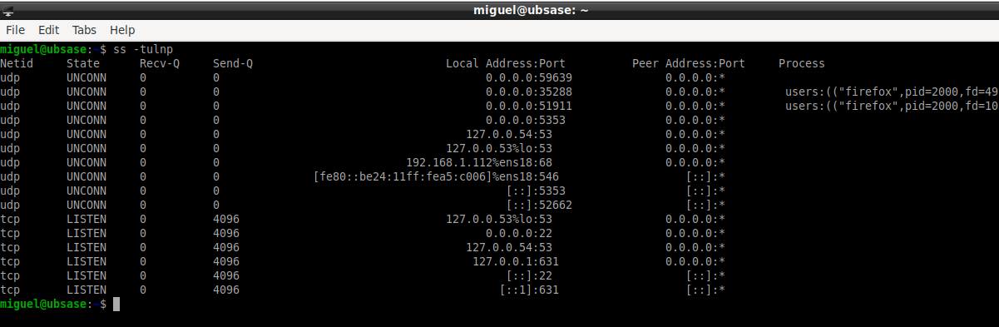

– Version de herramientas instaladas
bmon --version wireshark --version
Se verifica la correcta instalacion de las herramientas de monitorizacion. Esto garantiza que el entorno de analisis esta correctamente preparado.

– Monitorizacion en tiempo real con bmon
bmon
bmon permite visualizar en tiempo real:
- Interfaz de red activa.
- Tráfico entrante (RX).
- Tráfico saliente (TX).
- Velocidad de transferencia.
Se genera trafico mediante ping para observar variacion en tiempo real.
– Estadisticas de red del sistema
ss -s netstat -s
Estos comandos muestran:
- Total de conexiones TCP.
- Conexiones establecidas.
- Retransmisiones.
- Estadisticas UDP.
Son herramientas esenciales para diagnostico de problemas de red.
– Puertos abiertos y procesos asociados
ss -tulnp
Se identifican:
- Puertos en escucha.
- Servicios activos.
- PID del proceso asociado.
Este analisis es fundamental para auditorias de seguridad y deteccion de servicios no autorizados.
– Captura de paquetes ICMP con Wireshark
Se inicia captura sobre la interfaz activa y se aplica el filtro:
icmp
Se observan paquetes Echo Request y Echo Reply generados mediante ping.

– Analisis detallado de un paquete
Al seleccionar un paquete se visualiza:
- Frame completo.
- Encapsulado Ethernet II.
- Cabecera IPv4.
- Protocolo ICMP.
Wireshark permite desglosar cada capa del modelo OSI, facilitando el analisis forense y el estudio del trafico.

Manual basico de Wireshark
1. Inicio de captura
- Seleccionar interfaz activa.
- Iniciar captura.
2. Uso de filtros
- icmp → Paquetes ICMP.
- tcp → Trafico TCP.
- udp → Trafico UDP.
- ip.addr == 8.8.8.8 → Filtrado por IP concreta.
3. Analisis de paquetes
- Desglose por capas.
- Analisis de cabeceras.
- Identificacion de errores.
4. Aplicacion en administracion
- Diagnostico de problemas de red.
- Deteccion de trafico sospechoso.
- Analisis de latencia.
- Auditoria de comunicaciones.
Conclusion
Se han utilizado herramientas de monitorizacion en tiempo real y analisis profundo de paquetes para estudiar el comportamiento de la red en un sistema GNU/Linux. Estas tecnicas son fundamentales en administracion de sistemas, seguridad y analisis forense.